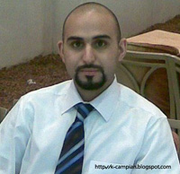

|
|
بیست و سوم خرداد براي کمپین یک میلیون امضا در كويت
چهار شنبه29 خرداد 1387
كمپين كويت - روز بیست و سوم خرداد 1387 تنها روز سختی برای کمپین یک میلیون امضای درون میهن که با بازداشتهای 10 تن از اعضای جنبش زنان و ضرب و شتم برخی دیگر و در نهایت بازجوئی و سپس آزادی آنان به قید وثیقه و ضمانت خاتمه یافت, نبود. چرا که در آنسوی آبهای نیلگون خلیج فارس ودرست در بین فضای صمیمی کمپین یک میلیون امضا در کویت, آقای محمد کابلی موسوی یکی از اعضای کمپین یک میلیون امضا در کویت بهمراه همسر کویتی تبار ایشان(خانم سعاد الشمری) در فرود گاه دبی اجازه ورود به کشور امارات را از سوی مقامات امنیتی فرودگاه نمیابد.

این اقدام عجیب و تحقیر کننده که با دستگیری اعضای جنبش در تهران همزمان بود تا آنجا پیش رفت که آقای کابلی موسوی و همسر و کودک خردسالشان مجبور شدند شب 23 خرداد را بر نیمکتهای فرودگاه دبی و در پیش روی چشمان هزاران مسافر دیگر به صبح کنند.
اشاره میشود که آقای موسوی کابلی قانونا به دلیل داشتن اقامت کویت مجاز است به کشور امارات تردد کرده و همسر ایشان که یک کویتی تبار است باز از این قاعده مستثنی نبوده و هردو نیازی به داشتن ویزا برای تردد به این کشور را نداشته اند. سرانجام مقامات امنیتی امارات با خونسردی تمام در صبح روز 24 خرداد ماه پاسپورتهای آقای کابلی موسوی و همسرش را مهرورود کرده و به آنان که برای به انجام رساندن برخی امور اداری در ابوظبی قصد آن سفر را کرده بودند, اجازه ورود میدهند.
آقای کریم پورحمزاوی دیگر عضو کمپین یک میلیون امضا در کویت ضمن اظهار تاسف شدید از چنین برخوردهائی میگویند: باید دید که آیا ایرانی بودن آقای کابلی موسوی مستوجب چنین اقدام توهین کننده و آمیخته به تبعیض بوده است یا کمپینی بودن ایشان!؟
آقای پورحمزاوی ادامه میدهد که: کمپین یک میلیون امضا نهادی برخواسته از خواسته های ملت ایران بوده و مشروعیت و حمایت کامل تمامی طیفهای ملت ایران را بهمراه خود دارد. و این ملت همواره خواهان صلح و تعامل مملو از احترام و برابری با دیگران و بخصوص همسایگان خود بوده و نمونه بارز این خصلتهای ارج گذار به احترام و برابری و نوع دوستی را میتوان در همین کمپین یک میلیون امضا به عینه مشاهده نمود. لذا اقدامهای اینچنینی از سوی اماراتیها که چیزی جز خشم مردم ایران را برنمی انگیزد نمیتواند اقدامی توام با حکمت و تعقل باشد.
تصویر:محمد موسوی کابلی
Kuwait.campian@gmail.com